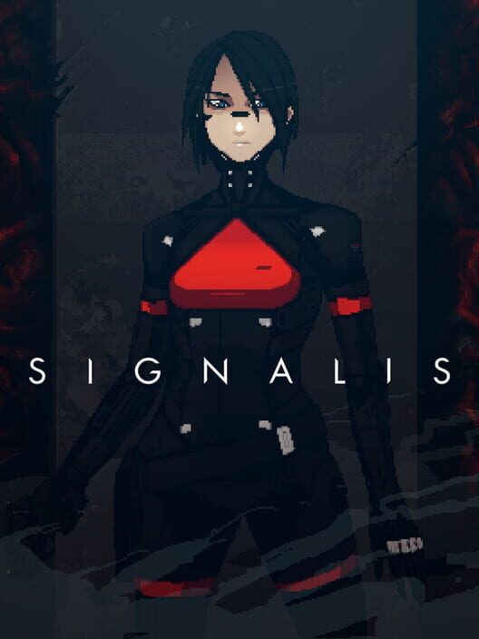
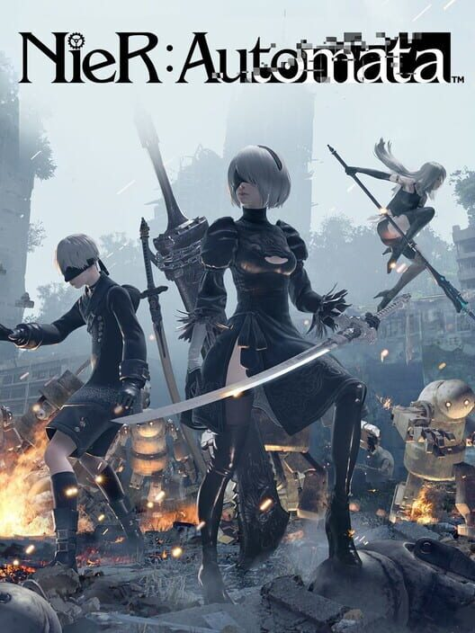
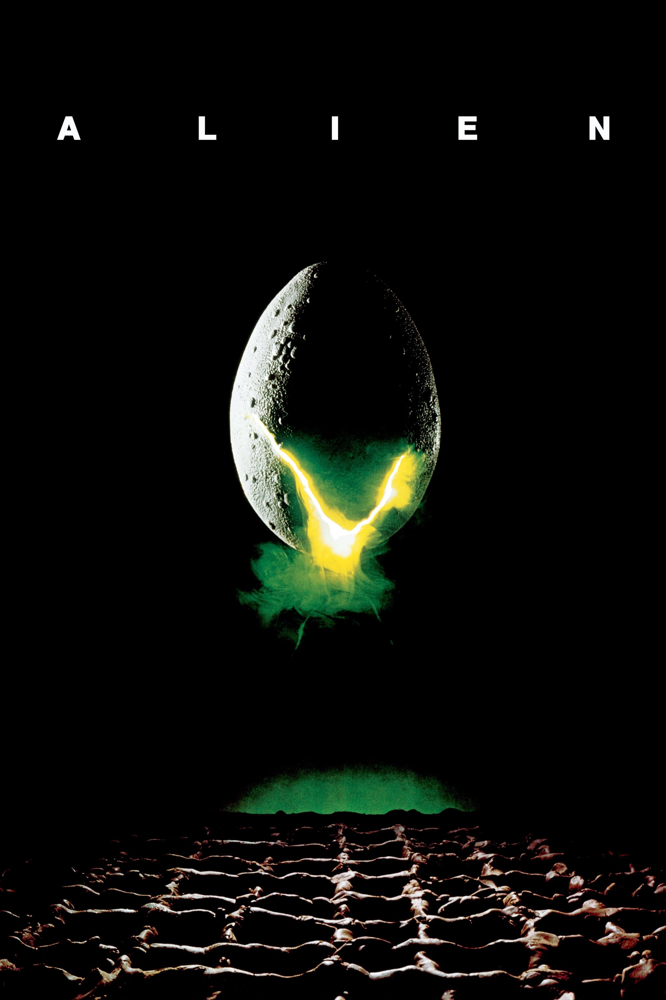
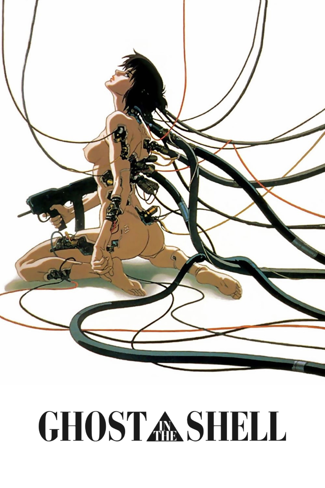
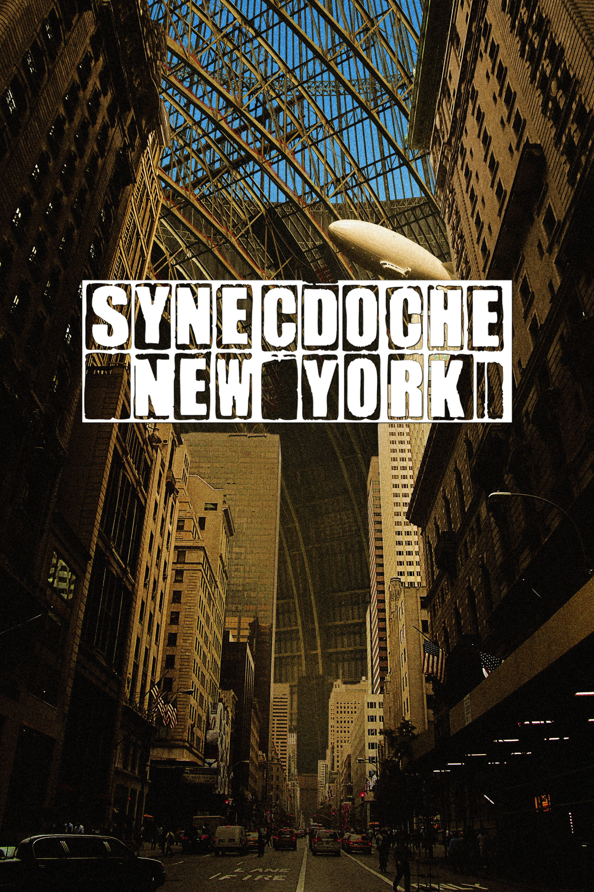
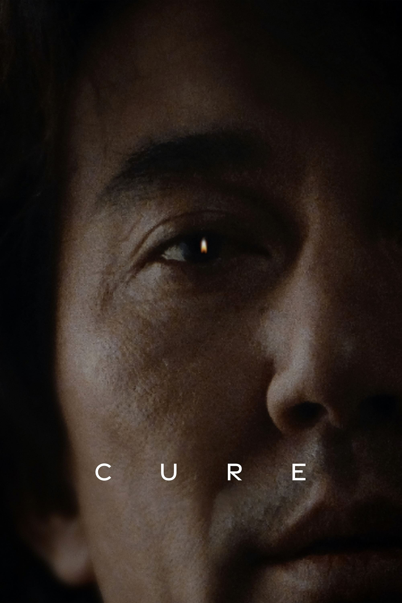
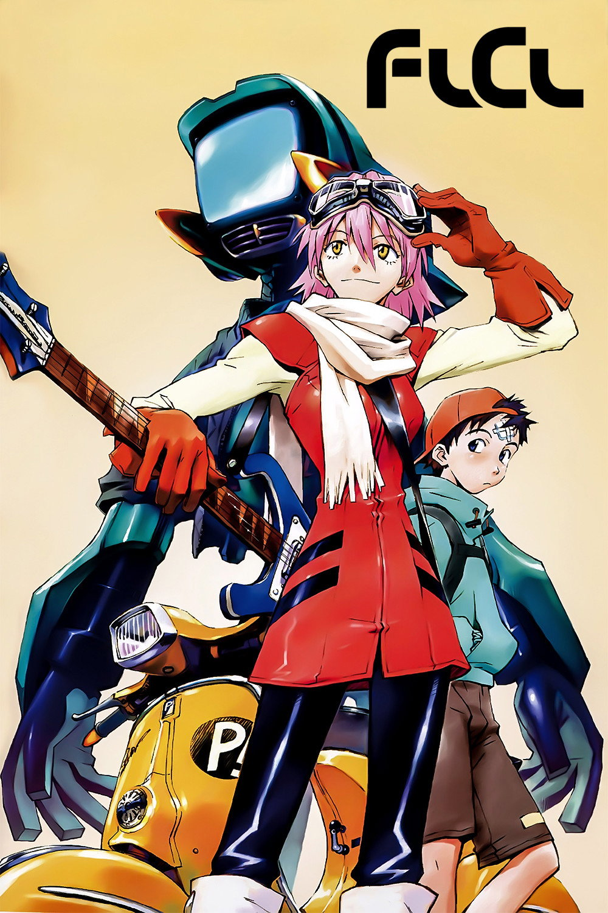

jeremy@zerviate ~/personal $ cat index.md
about
I'm big on movies, gaming and basically anything art related. This is just for a more intricate look, a few of my favorite picks, and other stuffs.
jeremy@zerviate ~/personal $ ls ~/setup
workstation
- cpu
- AMD Ryzen 7 7800X3D
- gpu
- AMD Radeon RX 9070 XT
- memory
- 64 GB Kingston Fury DDR5-6000
- board
- B850 AORUS Elite WiFi6E
- storage
- Samsung 990 Pro 1 TB / Samsung 990 EVO Plus 4 TB
- cooling
- Arctic Freezer 36 / 5× Arctic Pro fans
- case
- Jonsbo D32 Pro Black mATX
- power supply
- be quiet! Straight Power 12 850W
peripherals
- mouse
- Endgame Gear OP1 8K
- keyboard
- Custom-modded 75% Akko keyboard
- audio
- HyperX Cloud II
environment
- systems
- Windows 11 / Fedora Atomic 43
- editor
- Zed
- theme
- Void
jeremy@zerviate ~/library/games $ ls --favorites
favorite games
-

SIGNALIS2022 -
Dishonored2012 -

NieR:Automata2017 -
Destiny2014
jeremy@zerviate ~/library/movies $ ls --favorites
favorite movies
-

Alien1979 -

Ghost in the Shell1995 -

Synecdoche, New York2008 -

Cure1997
jeremy@zerviate ~/library/series $ ls --favorites
favorite series
-
Mr. Robot2015 -

Fooly Cooly2000 -
Vinland Saga2019 -
Slam Dunk1993
jeremy@zerviate ~ $